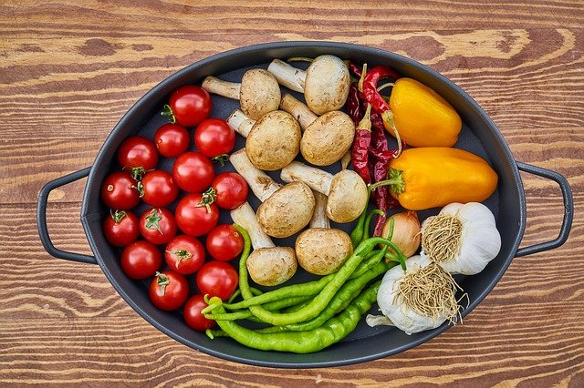

Vegetarian Sheet Pan Fajitas
Serves: 4
- 1 white onion
- 2 bell peppers
- 1 cauliflower head
- 1 portobello mushroom
- 2 Tbsp. olive oil
- 1 Tbsp. chili powder
- 1 tsp. cumin
- 1 tsp. smoked paprika (or regular paprika)
- 1 tsp. garlic powder
- 1 tsp. onion powder
- 1 tsp. salt
Serve With:
- 2 avacodos
- 1 lime
- 1/2 tsp. salt
- Fresh cilantro
- 8 flour or corn tortillas
- 1 15 oz. can of refried beans or homemade refried beans
- Preheat the oven to 425 degrees Fahrenheit.
- Thinly slice the onion. Slice the bell peppers. Chop the cauliflower into small florets. Chop the mushroom into bite-sized pieces. Add the veggies to a big bowl and toss them with the olive oil, chili powder, cumin, paprika, garlic powder, onion powder, and kosher salt.
- Line 2 baking sheets with parchment paper. Add the vegetables in a single layer. Roast 15 minutes, then remove the sheets, stir the veggies, and sprinkle on another 1/2 teaspoon salt spread between the trays (1/4 teaspoon on each). Stir again, then return to the oven and roast another 10 minutes until tender.
- Meanwhile, pit the avocados. Scoop out the flesh into a bowl and mash with a fork. Add the lime juice, salt, and cilantro.
- Heat the refried beans in a small sauce pan.
- If desired, char the tortillas by placing them on an open gas flame on medium for a few seconds per side, flipping with tongs, until they are slightly blackened and warm.
- To serve, place the refried beans and roasted veggies in tortillas, and top with guacamole.